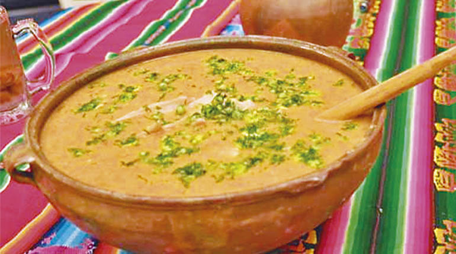

Tradición Religiosa
Durante la Semana Santa, Sucre se convierte en el epicentro de fervor religioso con una serie de procesiones y eventos que conmemoran la pasión, muerte y resurrección de Jesucristo. Las principales actividades incluyen:
Placeholder content for this accordion, which is intended to demonstrate the
.accordion-flush class. This is the first item's accordion body.Placeholder content for this accordion, which is intended to demonstrate the
.accordion-flush class. This is the second item's accordion body. Let's imagine this being filled with some actual content.Placeholder content for this accordion, which is intended to demonstrate the
.accordion-flush class. This is the third item's accordion body. Nothing more exciting happening here in terms of content, but just filling up the space to make it look, at least at first glance, a bit more representative of how this would look in a real-world application.Gastronomía y Tradiciones Locales
Además de las actividades religiosas, la Semana Santa en Sucre también ofrece una oportunidad para disfrutar de la gastronomía local y las tradiciones culturales.
